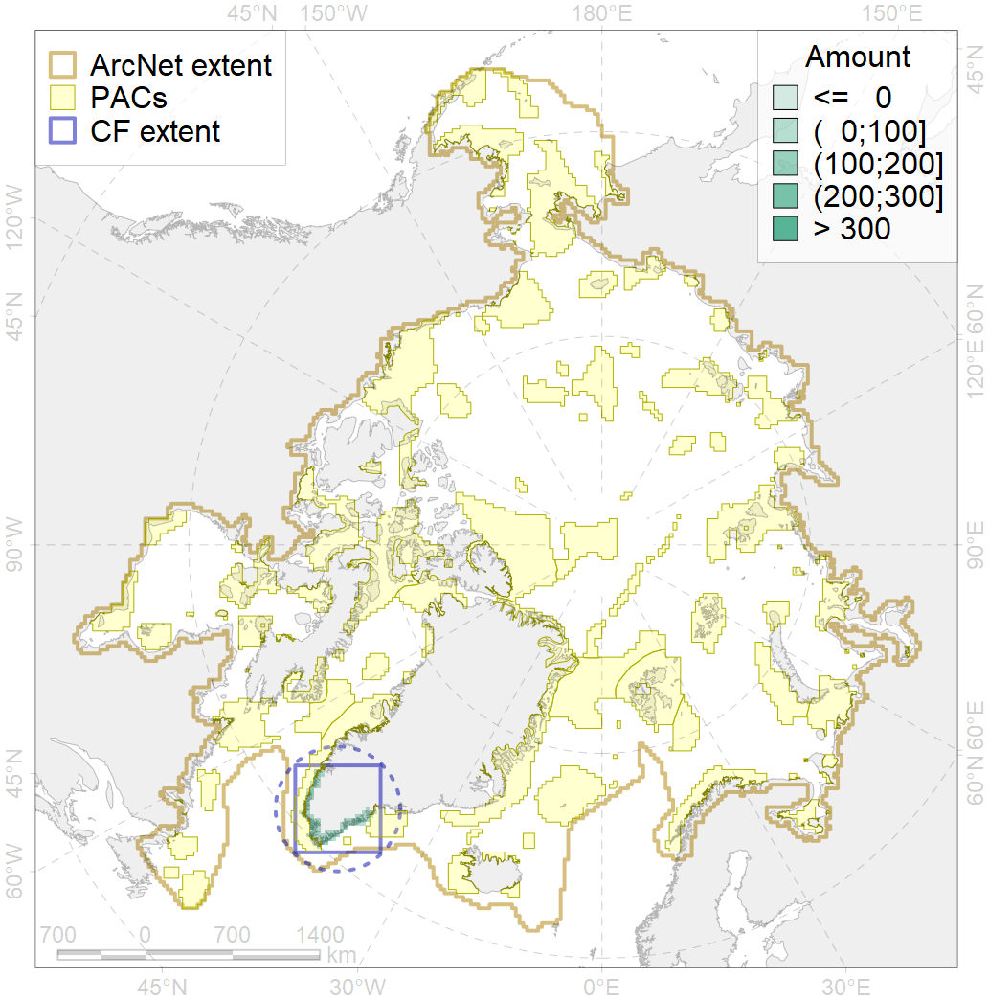
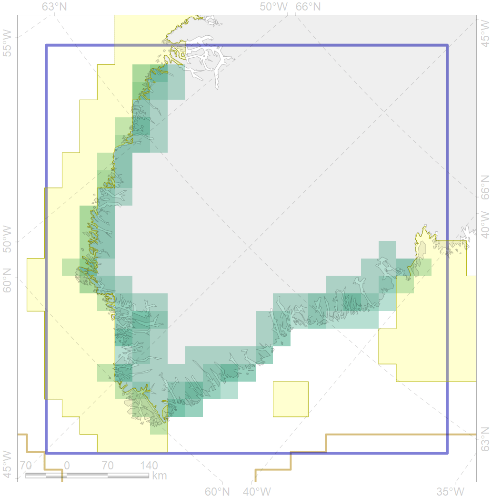

7240

| CF code | 7240 |
| CF name | Kelp forests of southern Greenland |
| Time Period | 1970-2015 |
| Source(s) | Feelby-Dexter et al., 2019 |
| Seasonality | 1-12 |
| Depth Horizon | 1-30 m |
| Methodology | Extent of kelp forest along the shore is derived acoording to frequent point observations reported in the literature and inferring quasi-continuous extent of kelp communities between points |
| Use Restrictions | Open access |
| Author Name | V. Spiridonov |
| Notes | |
| Scenario’s Target | 0.15 |
| Target Achievement | 0.255 (Scenario: 169.7%) |
| PAC | Share of the Total Amount within the PAC | Share of the Target Achievement for the ArcNet | PAC’s Contribution to the Target Achievement |
|---|---|---|---|
| 42 | 0.6%1.8% | 1.4%1.4% | 0.8%0.8% |
| 44 | 14.4%21.3% | 88.3%130.0% | 52.0%76.6% |
| inner | 15.1%23.1% | 89.7%131.3% | 52.8%77.4% |
| outer | 84.9%105.1% | 80.1%203.5% | 47.2%119.9% |
| † supplement values are for area consistence whereas principal values are for Accenter compatible gridded stats |